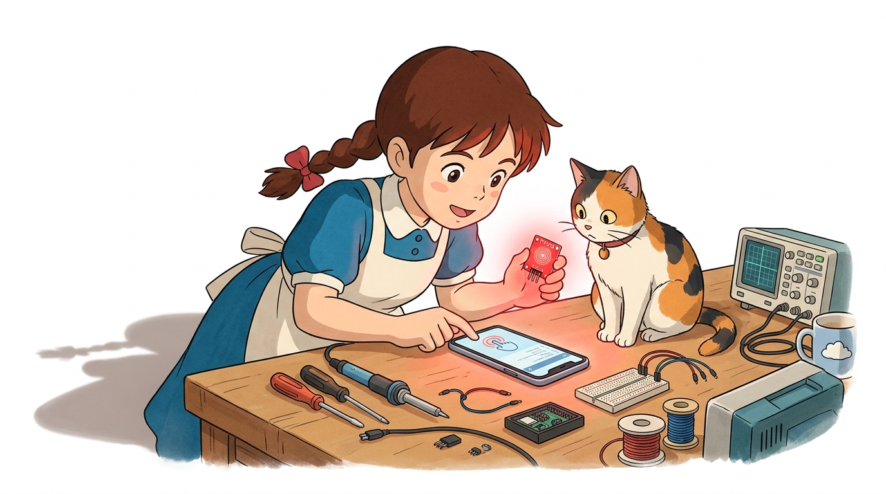
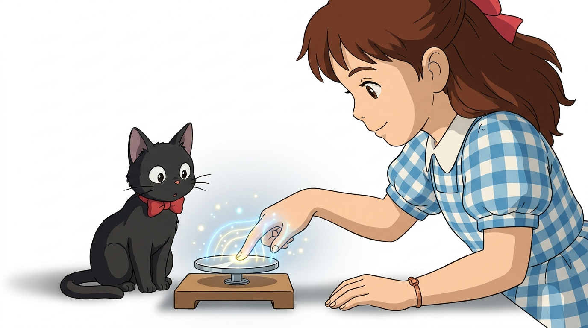
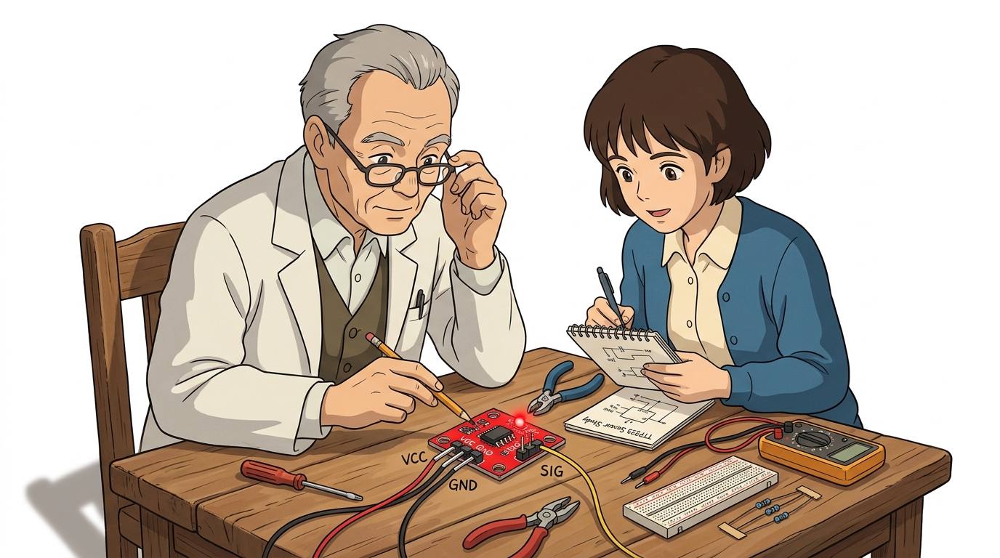
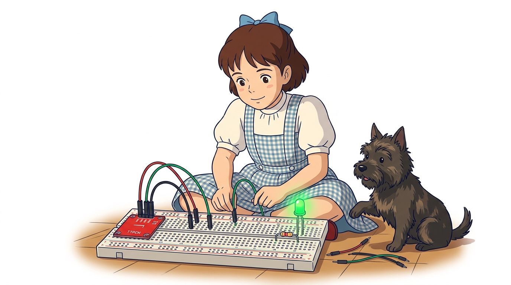
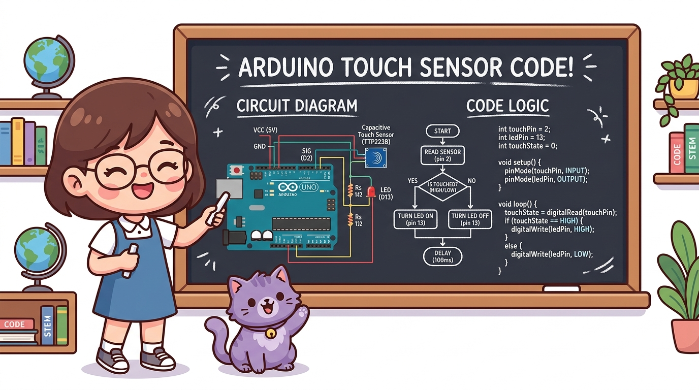
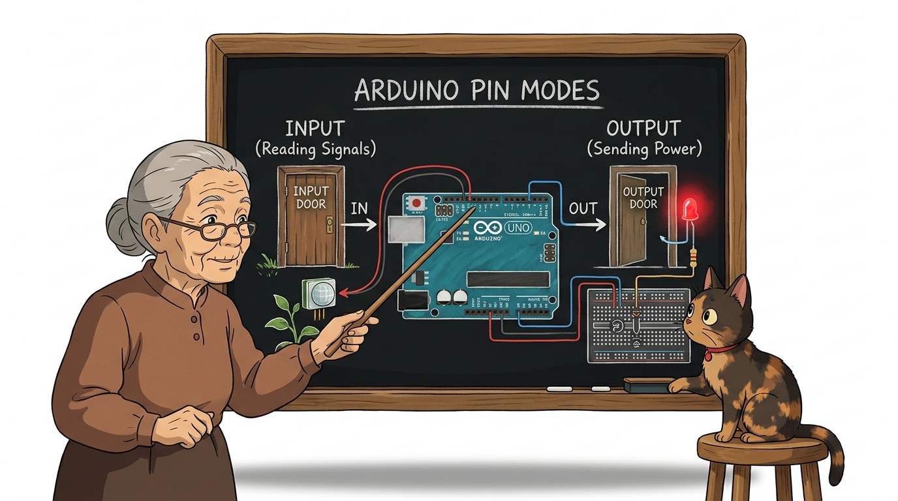
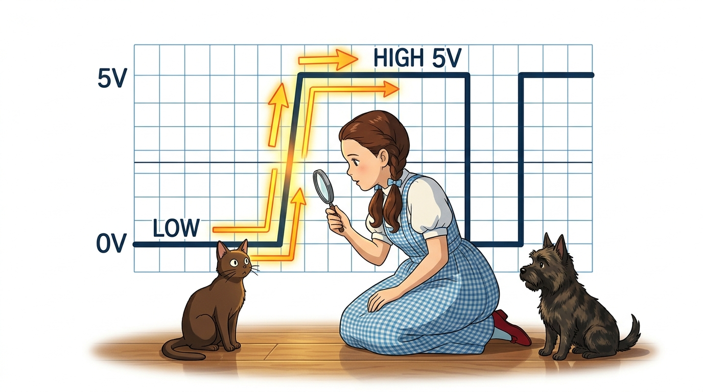
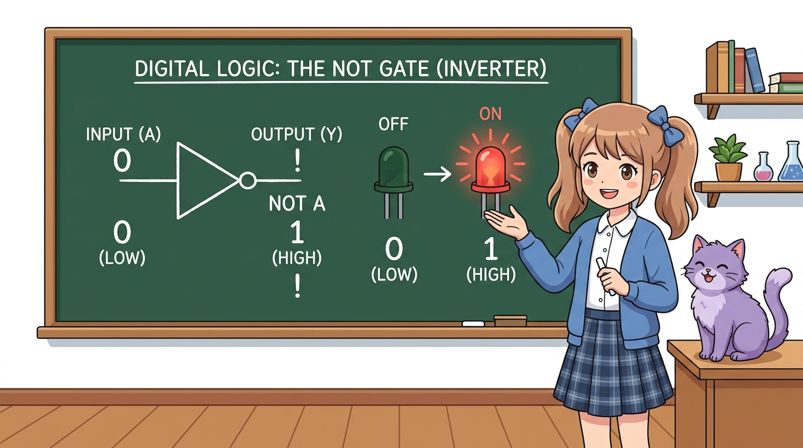

113_정전식터치센서_TTP223 👆✨

도로시와 마법 멘토 지니의 스마트폰 터치스크린 비밀 탐험
- 👧 도로시: “지니야! 힘주어 딸깍 누르는 딱딱한 스위치 말고, 스마트폰이나 엘리베이터 버튼처럼 살짝 손끝만 대도 불이 켜지는 센서는 어떻게 만드는 거야?”
- 🐱 지니: “우리 몸속에 흐르는 아주 미세한 전하를 감지하는 TTP223 정전식 터치 센서(Capacitive Touch Sensor) 를 사용하면 된단다! 오늘은 손끝 하나로 마법처럼 불을 켜는 터치 조명등을 만들어보자!”
-
🐶 토토: “바우! (코끝만 살짝 콩 대도 불이 반짝인다 멍!)”
- 🖥️ 강의 슬라이드: slides.md
1. 정전식 터치 센서(TTP223)의 특징과 응용 📱
스마트폰 화면, 도어록 터치패드, 최신 가전제품의 터치 버튼에 널리 쓰이는 센서입니다.
- 비접촉·무소음 스위치: 기계식 스프링이 없어 딸깍거리는 소음이 전혀 없고, 마찰로 인한 마모가 없어 반영구적인 수명을 자랑합니다.
- 초절전 저전력 설계: 평상시 대기 전류가 수 마이크로암페어($\mu\text{A}$) 수준으로 극히 낮아 배터리로 구동되는 휴대용 스마트 기기에 안성맞춤입니다.
- 비금속 재질 관통 감지: 센서 금속 패드 위에 얇은 아크릴, 유리, 종이, 플라스틱 판을 덮어두어도 인체의 정전용량을 감지하므로 방수·방진 외장 설계가 가능합니다.
- 즉각적인 디지털 출력: 복잡한 아날로그 변환 없이 손을 대면 즉시 HIGH(5V), 손을 떼면 LOW(0V)의 깨끗한 2진 디지털 신호를 출력합니다.
2. 정전식 터치(Capacitive Sensing)의 과학 원리 ⚡

사람의 몸은 약 70%가 수분과 전해질로 이루어져 있어 전기가 잘 통하는 도체(Conductor) 역할을 합니다.
- 평상시 대기 상태 (No Touch):
- 센서 PCB 표면의 둥근 구리 패드에 미세한 전기장(Electric Field)과 기준 전하량(정전용량, Capacitance)이 형성되어 안정된 평형을 유지합니다.
- 손가락 접근 및 접촉 (Touch):
- 도체인 인체의 손가락이 센서 패드 표면에 다가가면, 인체와 센서 전극 사이에 새로운 미세 커패시턴스가 형성되어 전하의 균형이 순간적으로 변합니다.
- 고감도 칩셋의 전압 판정:
- 내장된 TTP223-BA6 감지 전용 칩셋이 충방전 주파수의 미세한 변화를 포착하여 아두이노가 바로 읽을 수 있는 HIGH(5V) 디지털 전압 신호로 전환합니다!
3. TTP223 센서 모듈의 핀 구성과 스펙 🔍

TTP223 모듈은 3개의 직관적인 핀으로 설계되어 초보자도 10초 만에 완벽하게 배선할 수 있습니다.
| 핀 기호 | 역할 | 권장 아두이노 연결 | 기술적 상세 사양 |
|---|---|---|---|
| VCC | 전원 공급 (+) | 5V 또는 3.3V | 작동 전압 범위: DC 2.0V ~ 5.5V (3.3V 보드 호환) |
| GND | 전원 접지 (-) | GND 핀 | 0V 기준 전위선 |
| SIG (I/O) | 디지털 신호선 | 디지털 7번 핀 | 평상시 0V (LOW), 손가락 접촉 시 5V (HIGH) |
- 보드 내장 상태 LED: 센서 기판에 초소형 붉은색 LED가 내장되어 있어 아두이노 프로그램 없이도 전원만 넣고 손을 대면 불이 켜져 하드웨어 정상 여부를 즉시 확인할 수 있습니다.
- 동작 모드 설정 납땜 패드 (A, B 패드):
- 뒷면의 A, B 점퍼 패드를 납땜하여 연결하면 출력 극성(Active HIGH / Active LOW)이나 동작 모드(순간 버튼 / 하드웨어 토글 래치)를 취향대로 변경할 수 있습니다.
4. 아두이노와 터치 센서 브레드보드 회로 결선도 🔌

아두이노 우노 보드에 터치 센서와 상태 확인용 외부 LED를 브레드보드로 안전하게 연결합니다.
📌 부품 결선 단계별 가이드
- 센서 전원 연결:
- TTP223 센서의 VCC 핀 ➔ 아두이노 5V 핀 연결
- TTP223 센서의 GND 핀 ➔ 아두이노 GND 핀 연결
- 센서 신호선 연결:
- TTP223 센서의 SIG 핀 ➔ 아두이노 디지털 7번 핀 연결
- 외부 LED 및 보호 저항 연결 (시각적 피드백):
- LED의 긴 다리(애노드, +) ➔ $220\Omega$ 저항 ➔ 아두이노 디지털 13번 핀
- LED의 짧은 다리(캐소드, -) ➔ 아두이노 GND 핀
5. 칠판 교실: 터치 센서 회로와 코드 알고리즘 🎨

지니 선생님이 교실 칠판에 회로 결선도와 아두이노 C++ 코드 알고리즘의 유기적인 관계를 정리해 주었습니다!
- 하드웨어 입력: 사용자가 손끝으로 센서 패드를 만지면 7번 핀으로 5V 전기가 유입됩니다.
- 소프트웨어 처리:
digitalRead(7)함수가 실시간으로 전압을 읽어와HIGH인지LOW인지 판정합니다. - 하드웨어 출력:
HIGH이면 13번 핀에 연결된 LED에 5V를 출력하여 불을 밝히고, 시리얼 모니터로 상태 메시지를 전송합니다.
6. 실습 ①: 기본 터치 감지 전체 스케치 💻
// 터치 센서의 디지털 입력 상태(HIGH / LOW) 읽기
int touchState = digitalRead(touchPin);
손가락이 닿았을 때 LED가 켜지고 손을 떼면 꺼지는 가장 직관적인 터치 감지 스케치입니다.
// ==========================================
// 07.4-1 정전식 터치 센서 기본 감지 예제
// ==========================================
const int touchPin = 7; // 터치 센서 SIG 신호 입력 핀
const int ledPin = 13; // 상태 표시용 LED 출력 핀
void setup() {
Serial.begin(115200); // PC와 초고속 시리얼 통신 시작 (115200 bps)
pinMode(touchPin, INPUT); // 7번 핀을 센서 신호 감지 문(INPUT)으로 설정
pinMode(ledPin, OUTPUT); // 13번 핀을 전기를 공급하는 문(OUTPUT)으로 설정
Serial.println("==================================");
Serial.println(" TTP223 Touch Sensor Initialized ");
Serial.println(" 센서에 손가락을 살짝 대보세요! ");
Serial.println("==================================");
}
void loop() {
int touchState = digitalRead(touchPin); // 7번 핀 전압 검사 (HIGH or LOW)
if (touchState == HIGH) {
digitalWrite(ledPin, HIGH); // 손가락 접촉 시 LED 점등!
Serial.println("✨ [TOUCH ON!] 손가락 감지됨 -> LED 점등");
} else {
digitalWrite(ledPin, LOW); // 손을 떼면 LED 소등!
Serial.println("... [TOUCH OFF] 대기 중");
}
delay(150); // 모니터 스크롤 속도 조절 및 안정화 대기
}
7. 코드 상세 해설 ①-A: setup() 핀 모드 초기화 🚪

아두이노가 부팅될 때 딱 한 번 실행되는 setup() 함수에서 각 핀의 입출력 성격을 명확히 선언합니다.
void setup() {
Serial.begin(115200); // 1. 시리얼 모니터 통신 속도 개방
pinMode(touchPin, INPUT); // 2. 7번 핀: 외부 전압을 받아들이는 '입력(INPUT)'
pinMode(ledPin, OUTPUT); // 3. 13번 핀: 전기를 밖으로 밀어내는 '출력(OUTPUT)'
}
pinMode(touchPin, INPUT):- TTP223 센서가 생성한 5V 또는 0V 전압 신호가 아두이노 내부로 흘러 들어와야 하므로 반드시
INPUT모드로 열어두어야 합니다.
- TTP223 센서가 생성한 5V 또는 0V 전압 신호가 아두이노 내부로 흘러 들어와야 하므로 반드시
pinMode(ledPin, OUTPUT):- 아두이노가 LED를 켜기 위해 5V 전압을 능동적으로 공급해야 하므로
OUTPUT모드로 설정합니다.
- 아두이노가 LED를 켜기 위해 5V 전압을 능동적으로 공급해야 하므로
Serial.begin(115200):- 초당 115,200개의 비트를 주고받는 고속 통신 속도로 컴퓨터 화면에 실시간 감지 로그를 즉각 인쇄합니다.
8. 코드 상세 해설 ①-B: loop() 신호 읽기와 if-else 분기 제어 ⚙️

loop() 함수는 전원이 켜져 있는 동안 무한 반복하며 1초에 수천 번씩 센서 상태를 감시합니다.
void loop() {
int touchState = digitalRead(touchPin); // 1. 현재 전압 측정
if (touchState == HIGH) {
digitalWrite(ledPin, HIGH); // 2-A. 접촉 중: 5V 공급 (불 켜짐)
} else {
digitalWrite(ledPin, LOW); // 2-B. 미접촉: 0V 차단 (불 꺼짐)
}
delay(150); // 3. 0.15초 대기
}
digitalRead(touchPin):- 7번 핀의 전압이 약 3V 이상이면 정수
1(HIGH), 1.5V 이하이면 정수0(LOW)을 반환하여 변수touchState에 담습니다.
- 7번 핀의 전압이 약 3V 이상이면 정수
- 조건 분기
if (touchState == HIGH):- 손가락을 대고 있는 동안에는 매 루프마다 참이 성립하여 LED가 밝게 유지됩니다.
- 손을 떼는 찰나에 조건이 거짓이 되어
else블록이 실행되고, LED가 꺼집니다.
delay(150)의 미덕:- 너무 빠른 시리얼 모니터의 텍스트 폭주를 방지하고 사람의 눈으로 상태 변화를 편안하게 관찰할 수 있는 완충 시간을 제공합니다.
9. 실습 ②: 원터치 토글(Toggle) 스마트 무드등 스케치 💡
손을 대고 있을 때만 켜지는 게 아니라, 한 번 터치하면 켜진 채 유지되고, 다시 터치하면 꺼지는 토글(Toggle) 스위치를 구현합니다!
// ==========================================
// 07.4-1 스마트 무드등 토글(Toggle) 스케치
// ==========================================
const int touchPin = 7;
const int ledPin = 13;
int ledState = LOW; // 현재 램프의 켜짐/꺼짐 상태 (초기값: 소등)
int lastTouchState = LOW; // 바로 이전 루프에서의 센서 신호 기록
void setup() {
Serial.begin(115200);
pinMode(touchPin, INPUT);
pinMode(ledPin, OUTPUT);
digitalWrite(ledPin, ledState); // 초기 LED 상태 반영
}
void loop() {
int currentTouch = digitalRead(touchPin); // 현재 센서 상태 읽기
// [상승 엣지 감출]: 이전엔 안 눌렸다가(LOW) 지금 막 눌린(HIGH) 첫 순간!
if (currentTouch == HIGH && lastTouchState == LOW) {
ledState = !ledState; // LED 상태를 정반대로 뒤집기 (반전)
digitalWrite(ledPin, ledState); // 실제 하드웨어 LED에 반영
Serial.print("💡 무드등 상태 전환 -> ");
Serial.println(ledState == HIGH ? "전등 [ON] 켜짐!" : "전등 [OFF] 꺼짐!");
delay(50); // 스위치 바운싱 노이즈 방지 안정화 시간
}
lastTouchState = currentTouch; // 현재 상태를 다음 루프 비교용으로 보존
}
10. 코드 상세 해설 ②-A: 상승 엣지(Rising Edge) 순간 포착 📈

사람이 손가락으로 센서를 살짝 터치해도 아두이노는 그 짧은 0.3초 동안 loop()를 수만 번 실행합니다.
if (currentTouch == HIGH && lastTouchState == LOW)
- 단순 레벨 감지의 치명적 한계:
- 만약
if (currentTouch == HIGH)라고만 작성하면, 손가락을 대고 있는 0.3초 동안 전등이 수천 번 켜졌다 꺼졌다를 번개처럼 반복하여 손을 뗄 때 켜질지 꺼질지 운에 맡겨야 합니다!
- 만약
- 상승 엣지(Rising Edge, 신호가 0에서 1로 치솟는 순간)의 마법:
lastTouchState == LOW: 직전 루프까지는 손을 안 대고 있었음!currentTouch == HIGH: 지금 딱 손가락이 닿았음!- 두 조건이 동시에 만족하는 순간은 터치 동작이 시작되는 단 1회의 클록 사이클뿐입니다.
- 손을 계속 대고 있어도 다음 루프부터는
lastTouchState가HIGH로 바뀌므로 조건문이 실행되지 않아 불빛이 안전하게 유지됩니다.
11. 코드 상세 해설 ②-B: 논리 NOT(!) 연산자와 상태 반전 🔄

스마트 조명의 전원 버튼처럼 하나의 버튼으로 ON/OFF를 교대로 전환하는 원리입니다.
ledState = !ledState; // 1. 상태 뒤집기 (Toggle)
digitalWrite(ledPin, ledState); // 2. LED 출력
lastTouchState = currentTouch; // 3. 이전 상태 갱신
- 논리 NOT 연산자 (
!):- 참을 거짓으로, 거짓을 참으로 반전시키는 불리언 연산자입니다.
ledState가LOW(0)일 때!ledState는HIGH(1)이 됩니다.ledState가HIGH(1)일 때!ledState는LOW(0)이 됩니다.
- 기억 장치 역할을 하는 변수:
ledState변수가 무드등의 현재 켜짐/꺼짐 상태를 아두이노 RAM 메모리에 기억해 두기 때문에, 사용자가 손을 떼어도 불빛이 그대로 유지됩니다.
lastTouchState = currentTouch;의 중요성:- 루프 맨 마지막 줄에서 현재 센서의 전압 상태를 저장해 두어야만, 다음 루프가 시작되었을 때 엣지(변화의 순간)를 정확히 비교할 수 있습니다.
🌟 도로시와 지니의 핵심 요약 노트! 🏆

📋 07.4-1 정전식 터치 센서 정복 체크리스트
- 정전용량 감지 원리: 인체의 전하가 센서 패드에 닿을 때 발생하는 미세한 커패시턴스 변화를 디지털 신호(HIGH/LOW)로 감지했습니다.
- TTP223 모듈 배선: VCC(5V), GND, SIG(디지털 7번 핀)의 3선식 결선으로 간결한 스마트 터치 회로를 완성했습니다.
- 상승 엣지(Rising Edge) 알고리즘: 이전 상태(
lastTouchState)와 현재 상태(currentTouch)를 비교하여 단 1회의 터치 순간만 정확히 포착했습니다. - 논리 NOT(
!) 토글 제어: 한 번 터치하면 켜지고 다시 터치하면 꺼지는 스마트 호텔식 무드등 알고리즘을 체득했습니다.
👧 도로시: “기계식 스위치는 딸깍 소리가 나고 손가락에 힘이 들어가는데, 정전식 터치는 스마트폰 화면처럼 살짝 대기만 해도 불이 켜지니까 진짜 미래 마법 도구 같아!”
🐱 지니: “맞아! 게다가ledState = !ledState토글 원리와 상승 엣지 검출 알고리즘을 함께 쓰면 멋진 호텔식 원터치 조명 스위치를 누구나 쉽게 만들 수 있단다.”
🐶 토토: “바우! 다음 시간에는 사람이 방에 들어오면 척척 알아채는 ‘07.4-2 인체 감지 센서(PIR)’를 배우러 떠나자 멍!”